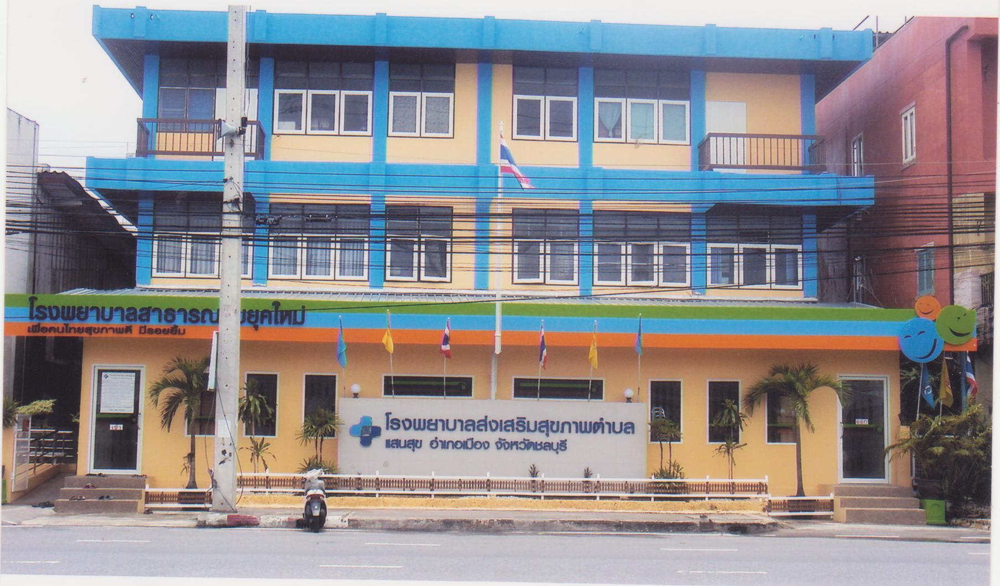
ยินดีต้อนรับ คณะผู้ตรวจประเมินรับรองคุณภาพ
ศูนย์คัดกรอง
รพ.สต.แสนสุข
ข้อมูลทั่วไป
ที่ตั้งและขอบเขตพื้นที่รับผิดชอบ
โรงพยาบาลส่งเสริมสุขภาพตำบลแสนสุข
เลขที่ 114 ถนนสุขุมวิท ตำบลแสนสุข
อำเภอเมือง จังหวัดชลบุรี
พื้นที่รับผิดชอบทั้งหมด 13 ถนน ได้แก่

บริบทพื้นที่ และข้อมูลประชากร

เป็นชุมชนเมืองและแหล่งท่องเที่ยวทางทะเลที่สำคัญ (หาดบางแสน) พื้นที่ด้านตะวันตกติดชายฝั่งอ่าวไทย แวดล้อมด้วยพื้นที่เศรษฐกิจ ส่งผลให้มีประชากรแฝงและนักท่องเที่ยวหมุนเวียนสูง
ประชากรในพื้นที่รับผิดชอบ
24,137 คน
ชาย
11,005
หญิง
13,132
การจำแนกตามช่วงวัย
เด็ก (0-5 ปี)
154
วัยเรียน/วัยรุ่น
2,738
วัยทำงาน
16,112
ผู้สูงอายุ
5,133
ข้อมูลสถานที่สำคัญในชุมชน
โรงเรียน ศูนย์พัฒนาเด็กเล็ก และศาสนสถานในพื้นที่รับผิดชอบ
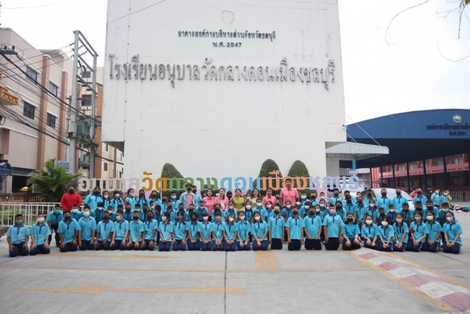
โรงเรียน (8 แห่ง)
- โรงเรียนอนุบาลวัดกลางดอนเมืองชลบุรี
- โรงเรียนแสนสุขศึกษา
- โรงเรียนวอนนภาศัพท์
- โรงเรียนโสตศึกษาจังหวัดชลบุรี
- โรงเรียนบ้านแหลมแท่น
- โรงเรียนวัดบางเป้ง
- โรงเรียนสามมุกคริสเตียนวิทยา
- โรงเรียนแสนสุข
ศูนย์พัฒนาเด็กเล็ก (1 แห่ง)
- ศูนย์พัฒนาเด็กเล็กเทศบาลเมืองแสนสุข
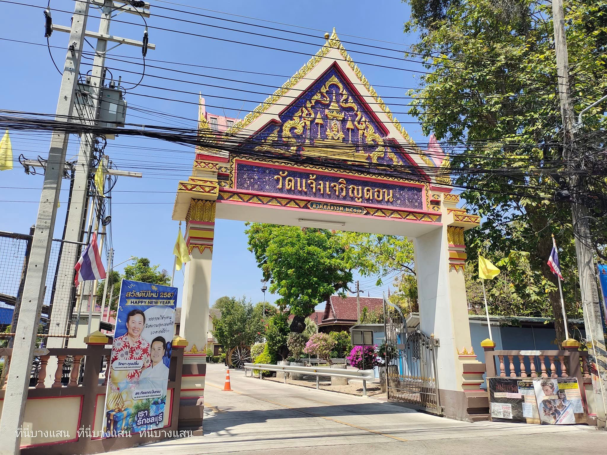
วัด (3 แห่ง)
- วัดแจ้งเจริญดอน
- วัดบางเป้ง
- วัดไตรมุขชยาราม
แผนผังโครงสร้างองค์กร
โครงสร้างการบริหารงานศูนย์คัดกรอง รพ.สต.แสนสุข
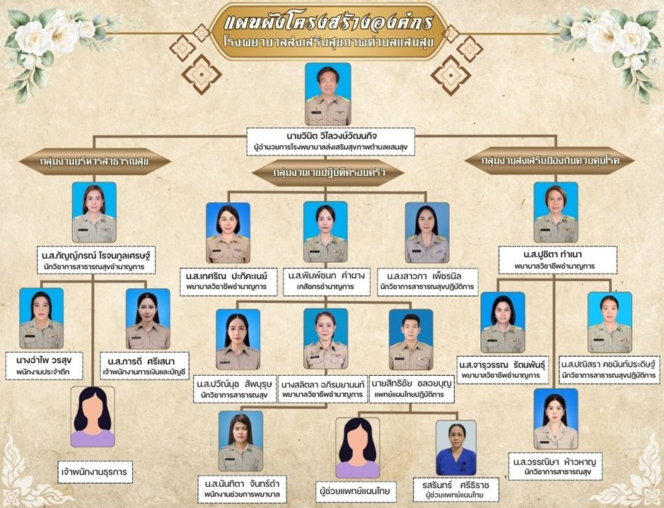
โครงสร้างและหน้าที่การรับผิดชอบ
บทบาทและหน้าที่ของบุคลากรประจำศูนย์คัดกรอง
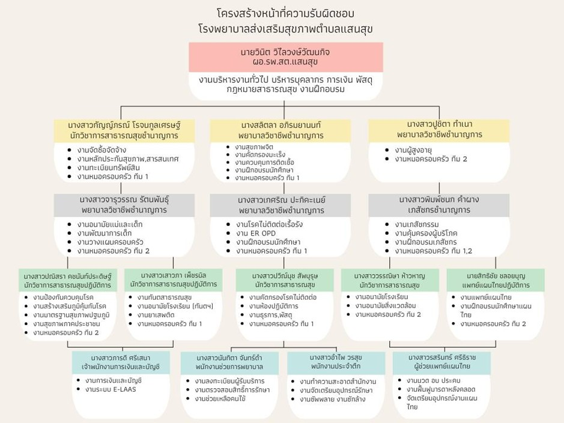
ตารางการให้บริการสุขภาพ
เวลาทำการและรายละเอียดการให้บริการของ รพ.สต.แสนสุข
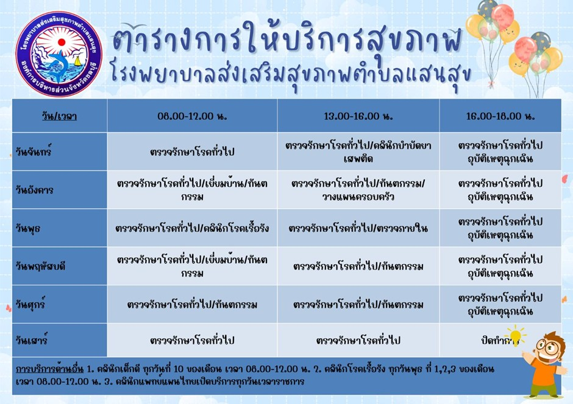
สถานการณ์ปัญหายาเสพติด
ปัจจัยเสี่ยงและบริบทเฉพาะของพื้นที่จังหวัดชลบุรี
ภาพรวมปัญหาในพื้นที่
-
เมืองเศรษฐกิจและท่องเที่ยว: มีประชากรแฝงและแรงงานต่างด้าวจำนวนมาก ทำให้เป็นเป้าหมายหลักของการกระจายยาเสพติด
-
เครือข่ายออนไลน์: เป็นช่องทางหลักที่ทำให้แพร่ระบาดอย่างรวดเร็ว เข้าถึงง่าย และเกิดกลุ่มยาผสมผสานแบบใหม่ (Club Drugs)
-
กลุ่มเสี่ยงหลัก: วัยทำงาน (อายุ 15-55 ปี) อาชีพรับจ้าง

วิสัยทัศน์ (Vision)
"เป็นศูนย์คัดกรองที่ได้มาตรฐาน เข้าถึงง่าย
ด้วยความร่วมมือของชุมชน เพื่อคุณภาพชีวิตที่ยั่งยืน"
พันธกิจ (Mission)
- พัฒนาระบบคัดกรองและประเมินให้ได้มาตรฐาน
- มีระบบการส่งต่อผู้ป่วยที่เป็นระบบและรวดเร็ว
- บูรณาการความร่วมมือกับภาคีเครือข่ายและชุมชน
เป้าประสงค์ (Goals)
- ผู้ใช้ยาเสพติดสามารถเข้าถึงบริการได้ง่าย
- ผู้เสพได้รับการบำบัดรักษาและฟื้นฟูอย่างเหมาะสม
- ชุมชนแสนสุขเข้มแข็งและปลอดภัยจากยาเสพติด
นโยบายและการขับเคลื่อนระดับจังหวัด
"ชลบุรี เที่ยวสุขใจ ปลอดภัยจาก ยาเสพติด"
5 มาตรการเร่งด่วนของจังหวัด
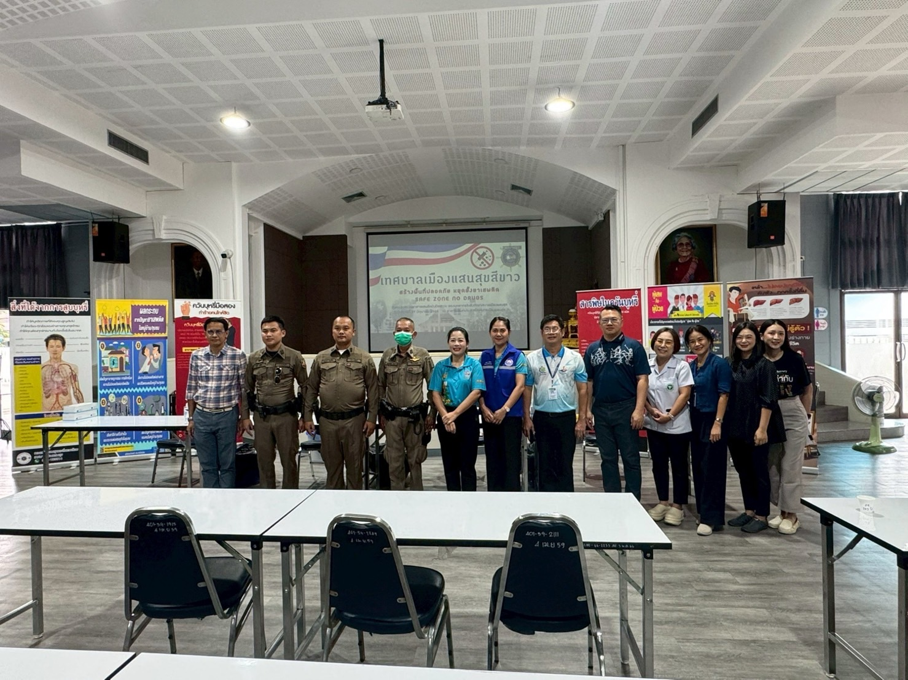
ขอบเขตบริการที่ 1: ด้านการป้องกันเชิงรุก
การให้ความรู้และค้นหาผู้เสพหน้าใหม่ในชุมชน
การรณรงค์และให้ความรู้
รพ.สต.แสนสุข มีการลงพื้นที่ออกให้ความรู้กับชุมชนในเวทีต่างๆ อย่างต่อเนื่อง เช่น การประชุมผู้นำชุมชน การจัดทำแผนระดับตำบล และการรณรงค์ในโรงเรียน เพื่อสร้างภูมิคุ้มกันและสร้างความตระหนักรู้ถึงพิษภัยของยาเสพติด
ผลงานบริการเชิงรุก NCDs
ดำเนินการประเมินและคัดกรองกลุ่มเสี่ยง NCDs (บุหรี่/สุรา) ประจำปี ควบคู่ไปกับบริการปกติ เพื่อค้นหากลุ่มเสี่ยงในระยะเริ่มต้น
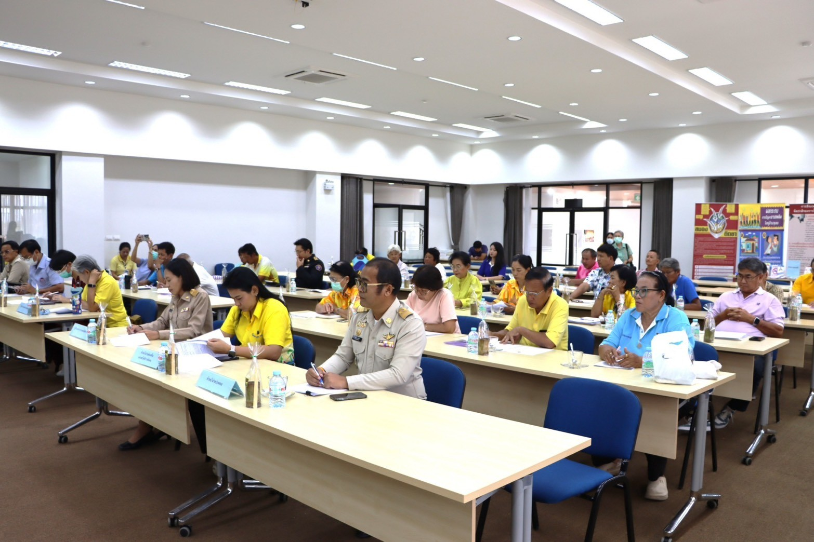
การออกให้ความรู้ในเวทีประชุมผู้นำ/การทำแผนตำบล
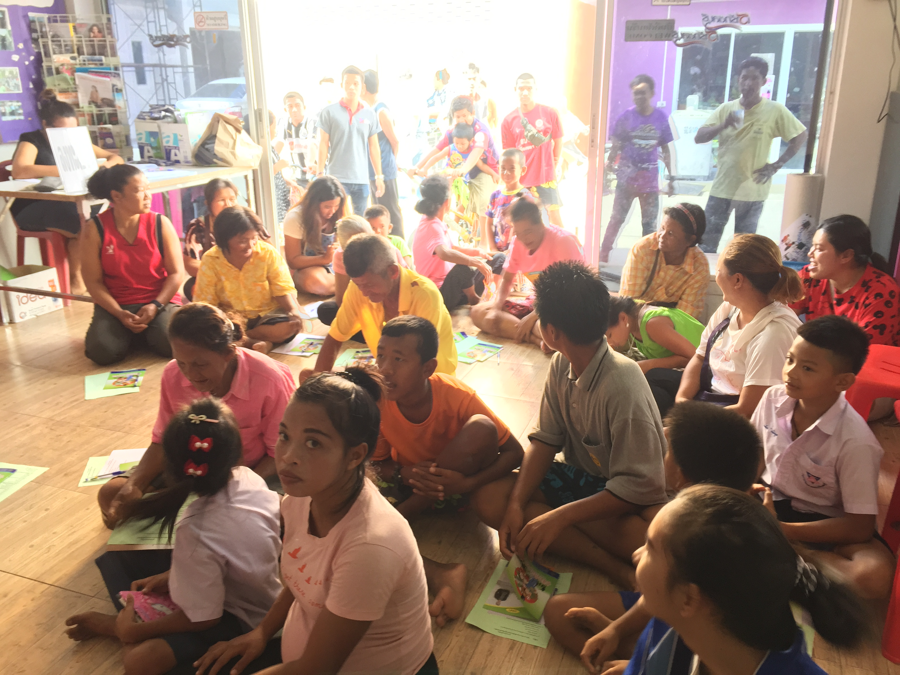
การให้ความรู้ในชุมชน
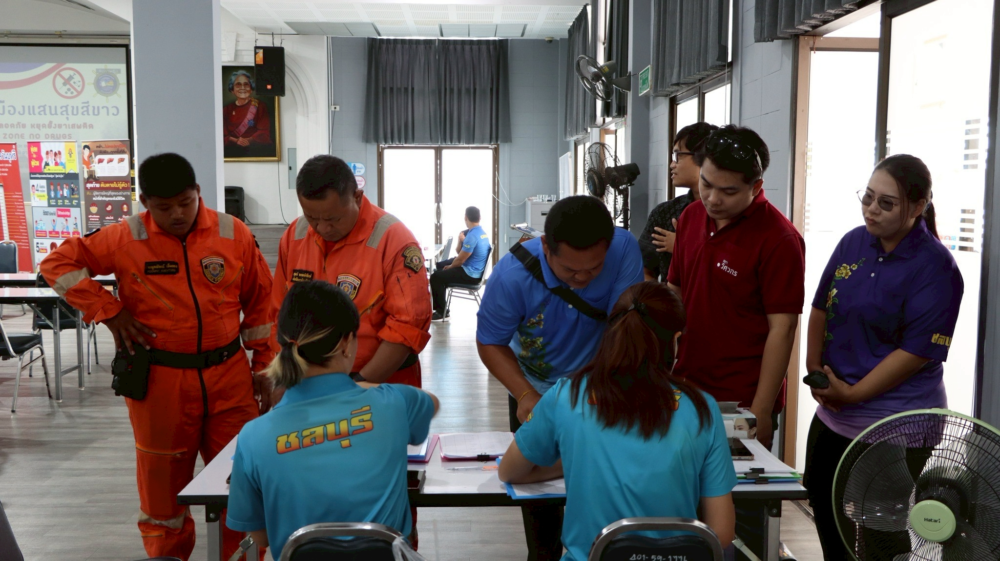
การประเมินคัดกรอง NCDs
ขอบเขตบริการที่ 2: ด้านการคัดกรองและประเมิน
ใช้เครื่องมือมาตรฐานกระทรวงสาธารณสุขในการคัดกรองและประเมินความรุนแรง
1. ตรวจหาสารเสพติดในร่างกาย
บริการตรวจปัสสาวะหาสารเสพติด โดยได้รับการสนับสนุนชุดตรวจทางปัสสาวะจาก องค์การบริหารส่วนจังหวัดชลบุรี
2. ประเมินพฤติกรรมก้าวร้าว (OAS)
Overt Aggression Scale หากประเมินแล้วพบว่าอยู่ในเกณฑ์ปกติ (ไม่มีอาการทางจิตเวช) จึงจะรับไว้เข้าสู่กระบวนการคัดกรองขั้นต่อไป
3. แบบประเมิน V.2 (คัดแยกความรุนแรง)
เครื่องมือหลักในการจำแนกพฤติกรรมการใช้ยาของผู้ป่วยออกเป็น 3 ระดับ ได้แก่: ผู้ใช้ (User) / ผู้เสพ (Abuser) / ผู้ติด (Addict)
4. ประเมินสุขภาพจิต (2Q, 9Q, 8Q)
คัดกรองภาวะซึมเศร้าและความเสี่ยงการฆ่าตัวตายเบื้องต้น เพื่อประเมินความเสี่ยงทางสุขภาพจิตร่วมด้วย
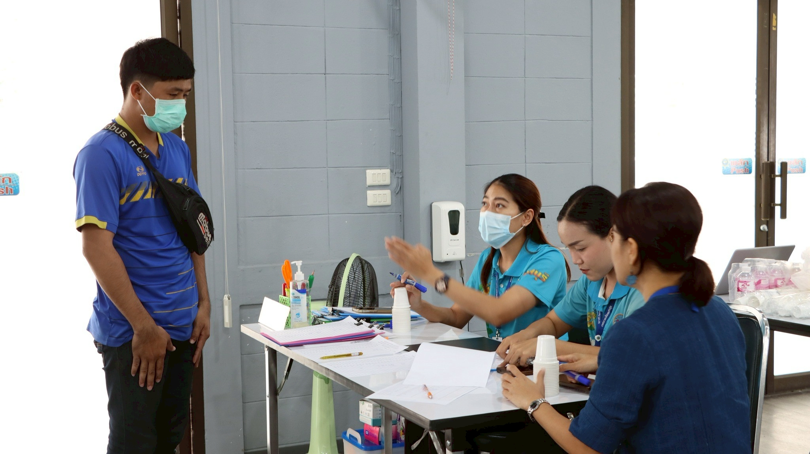
กระบวนการคัดกรองผู้ป่วย
เจ้าหน้าที่ศูนย์คัดกรองดำเนินการรับลงทะเบียน ซักประวัติ และให้คำแนะนำขั้นตอนการตรวจหาสารเสพติดทางปัสสาวะแก่ผู้รับบริการ
ขอบเขตบริการที่ 3: ด้านการบำบัดรักษาและส่งต่อ
การเตรียมบำบัดเบื้องต้นและการประสานงานส่งต่อเพื่อรับบำบัดตามความรุนแรง
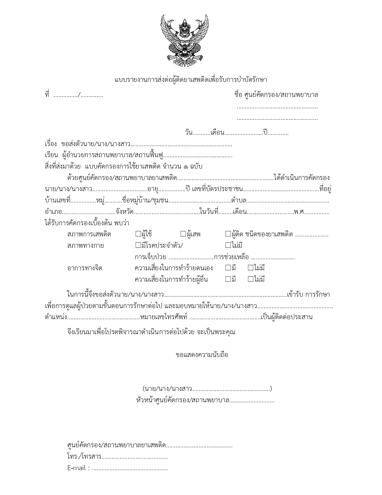
เอกสารส่งต่อผู้ป่วย
การเตรียมการบำบัดเบื้องต้น (Brief Intervention)
-
การให้คำปรึกษาเบื้องต้น: ให้คำแนะนำและเสริมสร้างแรงจูงใจแก่ผู้ป่วยที่คัดกรองจัดอยู่ในกลุ่ม "ผู้เสพ" ให้เกิดความตระหนักและพร้อมรับการบำบัด
-
การจำแนกระดับความรุนแรง: ประเมินปัญหาสุขภาพจิตและพฤติกรรมการเสพติด เพื่อแยกกลุ่ม (ผู้ใช้ / ผู้เสพ / ผู้ติด) อย่างชัดเจน
การประสานงานส่งต่อเพื่อรับบำบัดรักษา
-
การส่งต่อสถานพยาบาลหลัก: ประสานงานนำส่งผู้ป่วยกลุ่ม "ผู้เสพ" และ "ผู้ติด" หรือผู้ที่มีภาวะแทรกซ้อนทางกาย ไปยัง รพ.ชลบุรี หรือโรงพยาบาลต้นสังกัดตามสิทธิการรักษา
-
การเตรียมเอกสารส่งตัว: จัดเตรียมเอกสารการส่งต่อ แบบประเมิน V.2 และประวัติการคัดกรองให้ครบถ้วน เพื่อความต่อเนื่องในการรักษา
-
ระบบ Fast Track สำหรับกลุ่มเสี่ยง: กรณีพบผู้ป่วยที่มีภาวะฉุกเฉินทางจิต (SMI-V) จะมีระบบนำส่งด่วนเพื่อเข้ารับการรักษาทันทีเพื่อความปลอดภัย
ขอบเขตบริการที่ 4: การติดตามฟื้นฟู และระบบข้อมูล
การติดตามดูแลต่อเนื่องในชุมชน (CBTx) และการจัดการฐานข้อมูล
การติดตามฟื้นฟูสภาพทางสังคม (การเยี่ยมบ้าน)
- การลงพื้นที่เยี่ยมบ้าน: บูรณาการร่วมกับทีมชุมชนล้อมรักษ์ (CBTx), อสม. และผู้นำชุมชน เพื่อติดตามอาการและให้กำลังใจผู้ป่วย
- ประเมินและฟื้นฟู: ติดตามพฤติกรรม ป้องกันการกลับไปเสพซ้ำ (Relapse Prevention) และประเมินคุณภาพชีวิต
- ครอบครัวบำบัด: ให้คำปรึกษาแก่ญาติและครอบครัว เพื่อสร้างสภาพแวดล้อมที่เหมาะสมต่อการฟื้นฟู
ระบบข้อมูลและสารสนเทศ (ระบบ บสต.)
- การบันทึกข้อมูล: นำเข้าข้อมูลการคัดกรอง การส่งต่อ และผลการติดตาม เข้าสู่ระบบ บสต. อย่างครบถ้วน
- อัปเดตสถานะ: รายงานผลการดำเนินงานและสถานะของผู้ป่วยแต่ละรายตามวงรอบที่กำหนด
- ความปลอดภัยของข้อมูล: ปฏิบัติตาม พ.ร.บ. คุ้มครองข้อมูลส่วนบุคคล (PDPA) อย่างเคร่งครัด
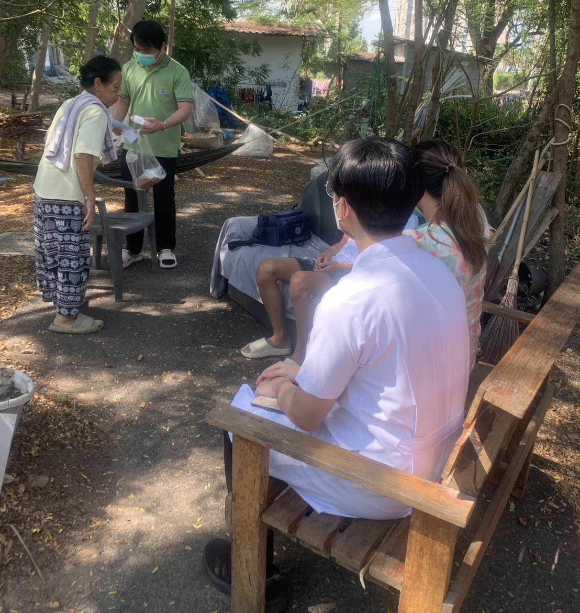
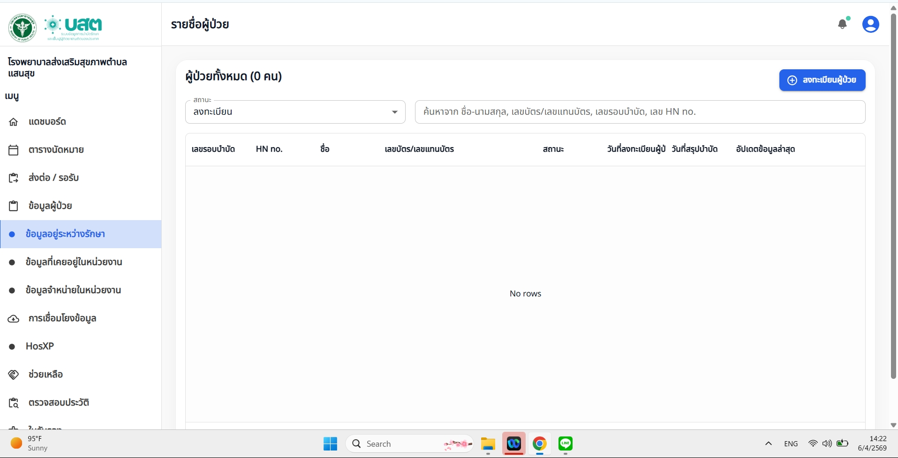
การบูรณาการภาคีเครือข่ายและการทำ MOU
บันทึกข้อตกลงความร่วมมือการดำเนินงานป้องกันและแก้ไขปัญหายาเสพติด
หน่วยงานที่ร่วมลงนาม (4 ฝ่าย)
สาระสำคัญของข้อตกลงความร่วมมือ
- ร่วมกันค้นหา นำส่ง และคัดกรองผู้ป่วยยาเสพติดในพื้นที่เข้าสู่กระบวนการบำบัด
- สนับสนุนชุดปฏิบัติการชุมชนล้อมรักษ์ (CBTx) ในการติดตามดูแลผู้ผ่านการบำบัด
- รักษาความปลอดภัยและระงับเหตุฉุกเฉินกรณีผู้ป่วยก้าวร้าวรุนแรง (SMI-V)
- แลกเปลี่ยนข้อมูลข่าวสารภายใต้กฎหมายคุ้มครองข้อมูลส่วนบุคคล (PDPA)
ภาพบรรยากาศการลงนามความร่วมมือ (MOU) การดำเนินงานป้องกันและแก้ไขปัญหายาเสพติด
อาคารสถานที่ และสิ่งอำนวยความสะดวก
มาตรฐานการรับรองคุณภาพ (ตอนที่ 2: ระบบงานสำคัญ)
การจัดการพื้นที่
สถานที่ออกแบบให้เป็นสัดส่วน เอื้อต่อความปลอดภัย ให้ความเป็นส่วนตัวแก่ผู้รับบริการ และมีระบบระบายอากาศที่ถ่ายเทสะดวก
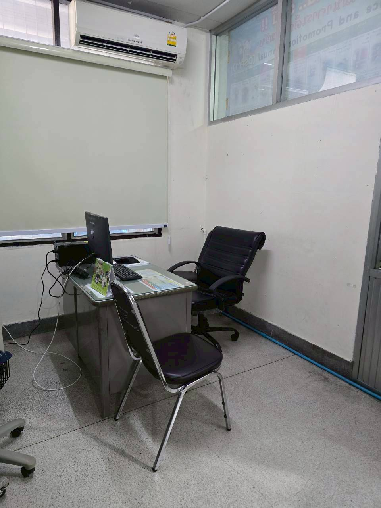
จุดตรวจปัสสาวะ
สถานที่เก็บปัสสาวะสะอาด ปลอดภัย ควบคุมการปนเปื้อนได้ และสามารถระบุตัวตนของสิ่งส่งตรวจได้อย่างชัดเจน
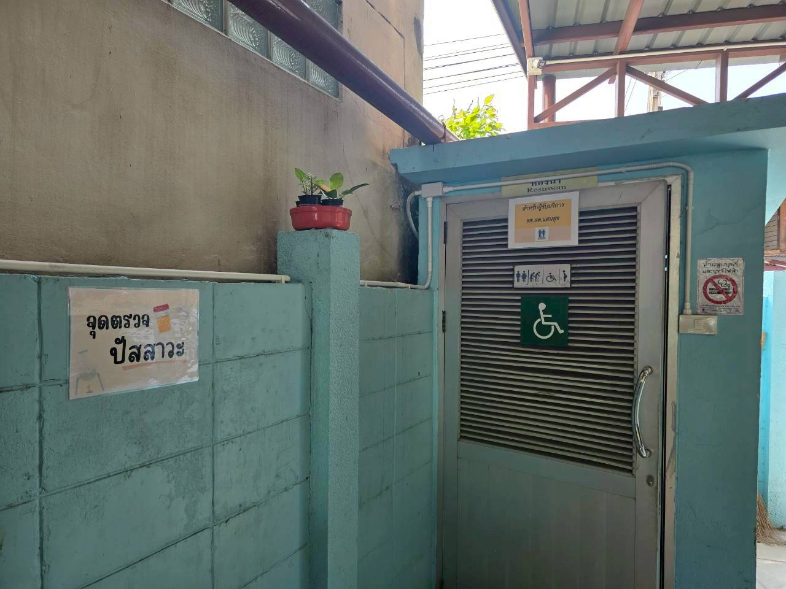
ระบบสำรอง & อุปกรณ์
มีระบบไฟฟ้าและน้ำสำรองตลอดเวลา พร้อมอุปกรณ์จำเป็น (ชุดทดสอบ เครื่องวัดความดัน) และตู้เก็บเวชระเบียนที่ปลอดภัย
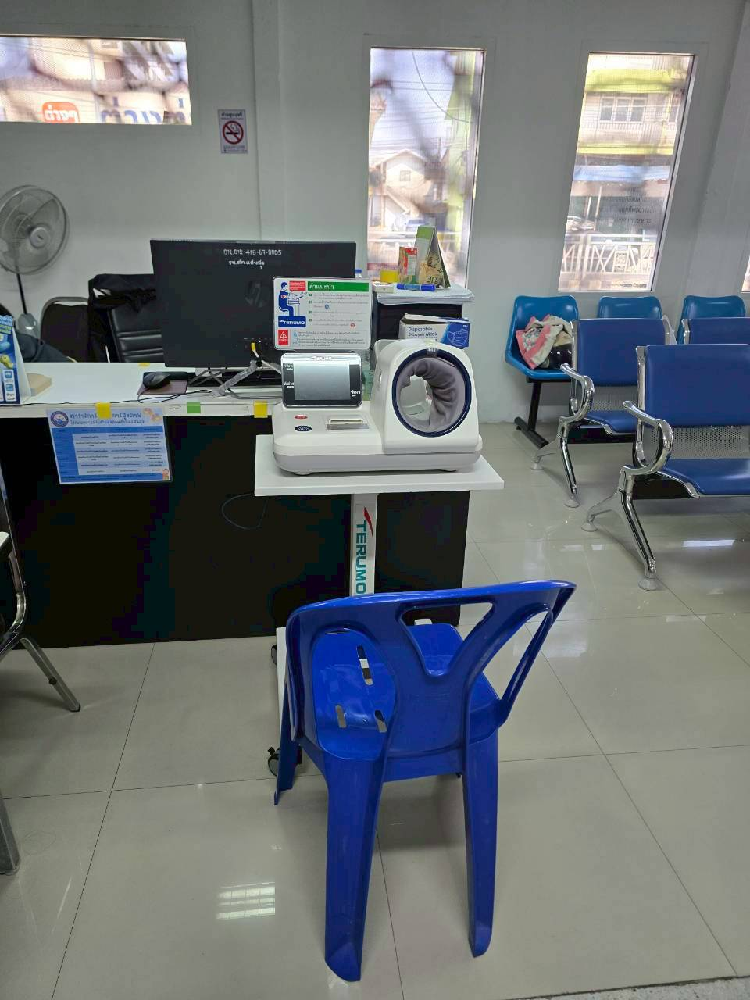
การจัดการขยะติดเชื้อและสิ่งส่งตรวจ
มาตรฐานความปลอดภัยด้านอาคารสถานที่และระบบการควบคุมการติดเชื้อ
จุดทิ้งขยะติดเชื้อ (Infectious Waste)
ศูนย์คัดกรอง รพ.สต.แสนสุข ได้จัดเตรียมถังขยะสำหรับทิ้งขยะติดเชื้อโดยเฉพาะ เพื่อรองรับ ตลับทดสอบสารเสพติดและถ้วยเก็บปัสสาวะ หลังเสร็จสิ้นกระบวนการตรวจ โดยปฏิบัติตามมาตรฐานการควบคุมการติดเชื้ออย่างเคร่งครัด
ภาชนะรองรับมาตรฐาน
ใช้ถังขยะสีแดงแบบมีฝาปิดมิดชิด มีสัญลักษณ์ขยะมูลฝอยติดเชื้อชัดเจน
ถุงแดงรองรับภายใน
ซ้อนด้วยถุงขยะสีแดงเพื่อป้องกันการรั่วซึมของสารคัดหลั่งหรือสิ่งปนเปื้อน
การจัดเก็บและทำลาย
มัดปากถุงให้แน่นสนิทเมื่อใช้งานเสร็จ และนำส่งทำลายตามระบบการจัดการขยะติดเชื้อของหน่วยงานสาธารณสุข
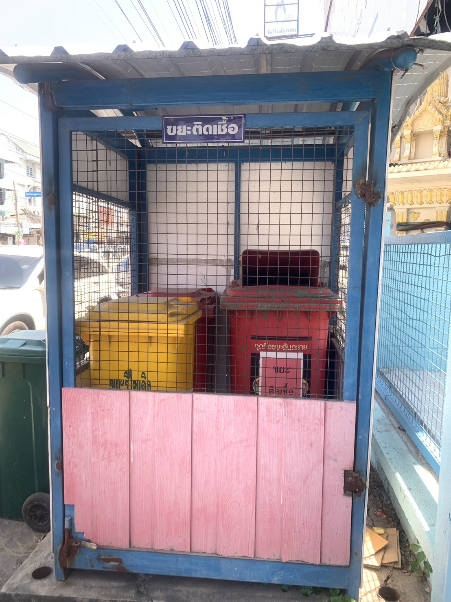
กระบวนการรับและคัดกรองผู้ป่วย (Workflow)
รายละเอียดขั้นตอนการให้บริการและจำแนกผู้ป่วยเพื่อส่งต่อบำบัดรักษา
ขั้นตอนการรับเข้าและซักประวัติ (Admission & Registration)
- การรับเข้า: รับผู้ป่วยที่เข้ารับการบำบัดแบบสมัครใจ หรือ ผู้ที่ได้รับการส่งต่อจากกระบวนการทางกฎหมาย (ม.114)
- ซักประวัติ: ดำเนินการซักประวัติเบื้องต้น ตรวจสอบสิทธิการรักษาพยาบาล และลงทะเบียนเข้ารับบริการ
- พิทักษ์สิทธิ์: เจ้าหน้าที่ให้คำแนะนำ แจ้งสิทธิ ขั้นตอนการให้บริการ และชี้แจงการคุ้มครองข้อมูลส่วนบุคคล (PDPA) ให้ผู้ป่วยและญาติรับทราบอย่างชัดเจน
ขั้นตอนการคัดกรองและประเมิน (Screening & Assessment)
- ประเมินความปลอดภัย: ประเมินความเสี่ยงพฤติกรรมก้าวร้าวรุนแรง (OAS) ก่อนให้บริการเพื่อความปลอดภัย
- ตรวจหาสารเสพติด: ดำเนินการเก็บปัสสาวะในสถานที่ที่จัดเตรียมไว้ และตรวจด้วยชุดทดสอบที่ได้มาตรฐาน
- จำแนกกลุ่มผู้ป่วย: ทำแบบประเมิน V.2 ร่วมกับการสัมภาษณ์ เพื่อจำแนกระดับความรุนแรง (ผู้ใช้ / ผู้เสพ / ผู้ติด)
ขั้นตอนการบันทึกข้อมูลและส่งต่อ (Recording & Referral)
- ระบบข้อมูล: บันทึกประวัติ ผลการประเมิน และผลการคัดกรองลงในระบบข้อมูล บสต. ให้ครบถ้วนและเป็นปัจจุบัน
- การส่งต่อ: สรุปผลการประเมินเพื่อดำเนินการส่งต่อสถานพยาบาลหลัก (รพ.ชลบุรี) ตามเกณฑ์ระดับความรุนแรง
- การดูแลต่อเนื่อง: ประสานงานเครือข่ายชุมชน (CBTx) เพื่อบูรณาการร่วมกับผู้นำชุมชนในการติดตามดูแล
ภาพประกอบการดำเนินงานรับและคัดกรอง
บรรยากาศ สถานที่ และอุปกรณ์จริงของศูนย์คัดกรอง รพ.สต.แสนสุข
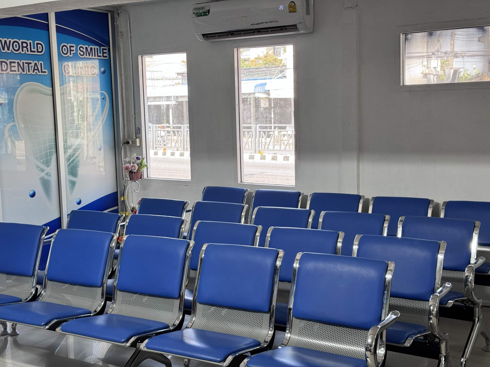
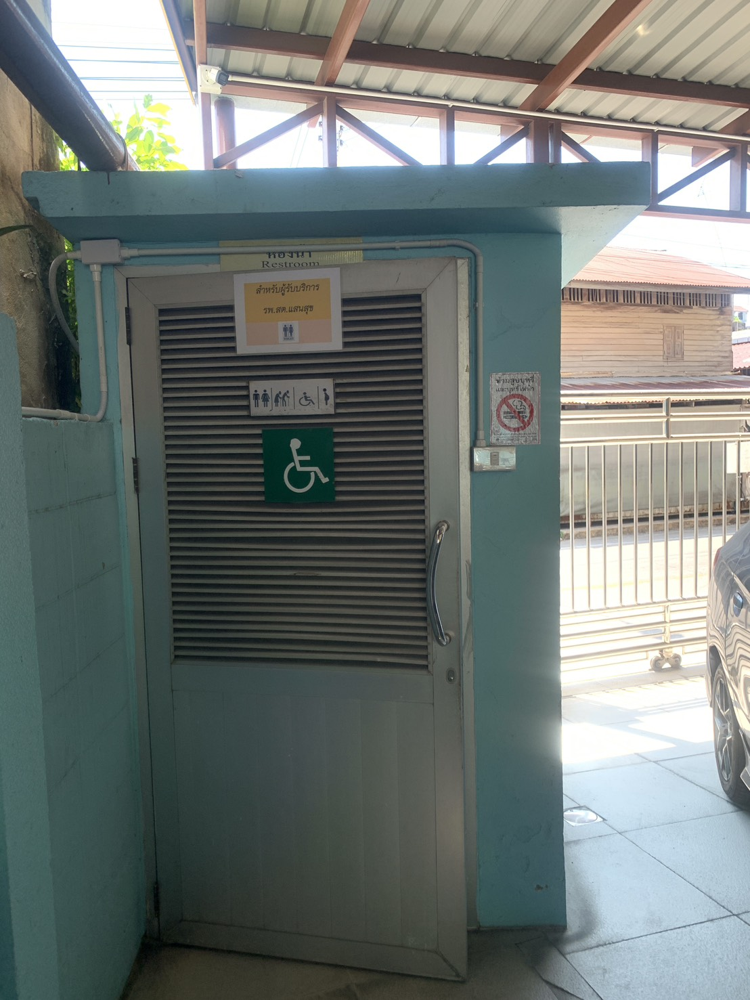
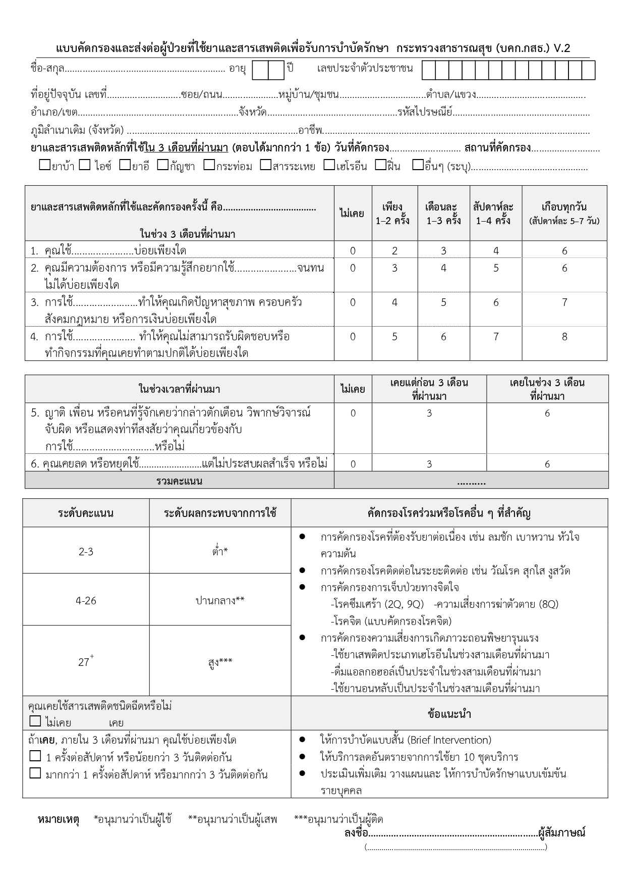
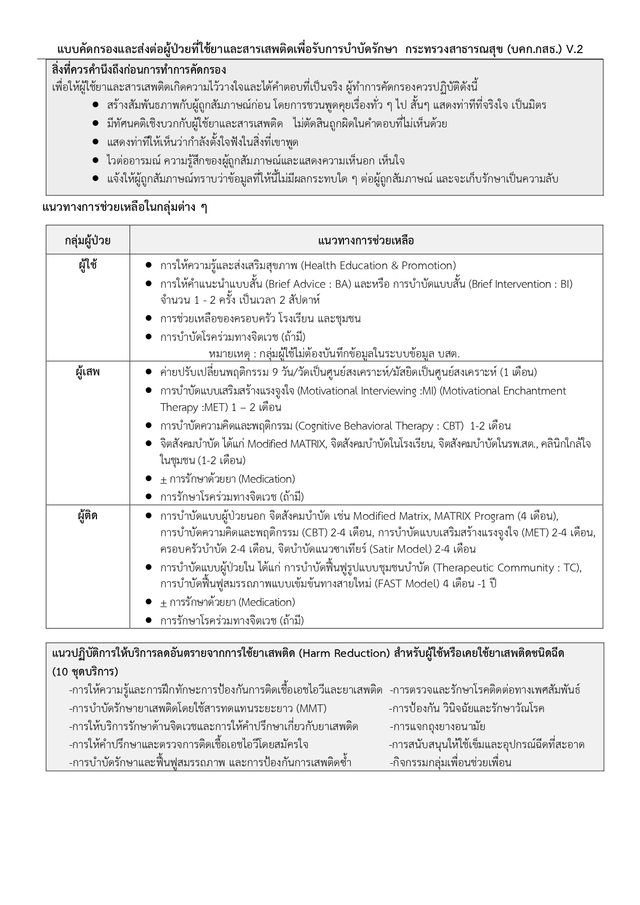
แผนผังกระบวนการคัดกรอง (Flowchart)
แนวทางการตัดสินใจ และการจำแนกผู้ป่วยเพื่อส่งต่อบำบัดรักษา
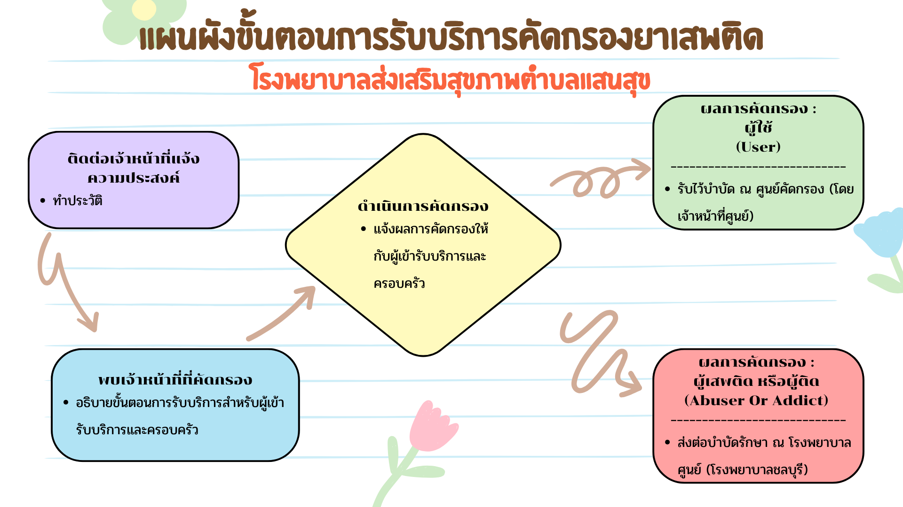
เจ้าหน้าที่ที่ปฏิบัติงานในศูนย์คัดกรอง
บุคลากรและผู้รับผิดชอบงานศูนย์คัดกรอง รพ.สต.แสนสุข
นายวินิต วิไลวงษ์วัฒนกิจ
ผอ.รพ.สต.แสนสุข
หัวหน้าศูนย์คัดกรอง
นางสาวกัญญ์ภรณ์ โรจนกูลเศรษฐ์
นักวิชาการสาธารณสุขชำนาญการ
นางสาวเสาวภา เพ็ชรนิล
นักวิชาการสาธารณสุขปฏิบัติการ
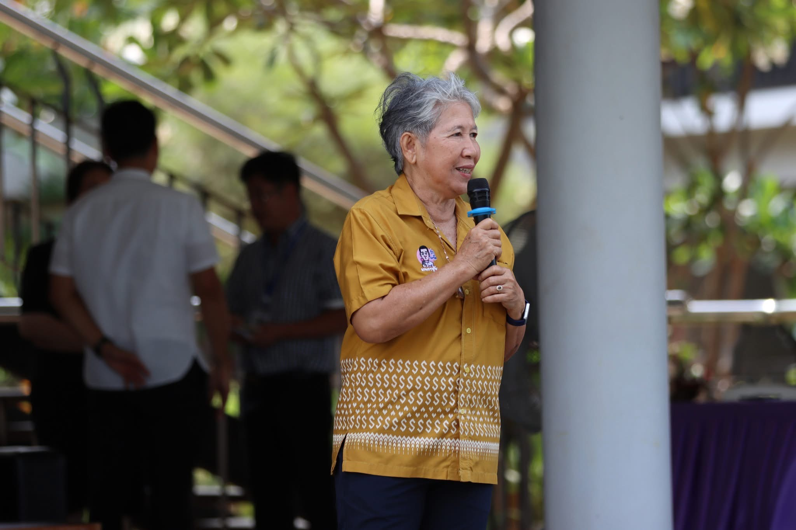
นางจุฑามาศ ปรารมณ์
ประธาน อสม.ตำบลแสนสุข
นายนิติ ชนะสงคราม
ประธานชุมชนร่วมใจพัฒนา
แผนการฝึกอบรมและศึกษาต่อเนื่อง
ยกระดับศักยภาพบุคลากร เพื่อรองรับการบำบัดฟื้นฟูอย่างยั่งยืน
เพื่อให้ศูนย์คัดกรอง รพ.สต.แสนสุข มีความพร้อมในการรับมือและบำบัดรักษาผู้ป่วยยาเสพติดได้อย่างมีประสิทธิภาพ จึงได้จัดทำแผนพัฒนาบุคลากร (Training Plan) ล่วงหน้า ดังนี้
หลักสูตร BA & BI
การให้คำปรึกษาเบื้องต้น (Brief Advice) และการบำบัดแบบสั้น (Brief Intervention)
เป้าหมายผู้เข้ารับการอบรม:
นางสาวเสาวภา เพ็ชรนิล
Matrix Program
หลักสูตรกายจิตสังคมบำบัด เพื่อฟื้นฟูผู้ติดยาเสพติดแบบผู้ป่วยนอก
เป้าหมายผู้เข้ารับการอบรม:
นางสาวเสาวภา เพ็ชรนิล
ผลลัพธ์ที่คาดหวัง
เจ้าหน้าที่จะมีทักษะการบำบัดยาเสพติดรูปแบบ BA, BI และ Matrix Program ช่วยยกระดับศักยภาพของศูนย์คัดกรองให้สามารถรับมือและส่งต่อผู้ป่วยได้อย่างเป็นระบบและมีประสิทธิภาพสูงสุด ร้อยละ 100
การพัฒนาคุณภาพอย่างต่อเนื่อง (CQI)
แนวทางการยกระดับมาตรฐานและพัฒนาระบบบริการศูนย์คัดกรอง
เป้าหมายการพัฒนา (Quality Goal)
มุ่งเน้นการพัฒนาระบบการคัดกรองให้รวดเร็ว แม่นยำ และผู้ป่วยได้รับการดูแลอย่างเหมาะสม โดยใช้กระบวนการ PDCA เป็นกลไกหลักในการขับเคลื่อนอย่างต่อเนื่อง
Plan (การวางแผน)
- ทบทวนกระบวนการทำงานและผลการดำเนินงานที่ผ่านมา
- วิเคราะห์ปัญหาและอุปสรรคในการให้บริการคัดกรอง
- กำหนดหัวข้อการพัฒนาและตั้งเป้าหมายตัวชี้วัด (KPIs)
Do (การปฏิบัติ)
- นำแนวทางหรือนวัตกรรมใหม่มาทดลองปรับใช้ในการทำงาน
- จัดการอบรมและทบทวนองค์ความรู้ให้แก่เจ้าหน้าที่
- บูรณาการการปฏิบัติงานร่วมกับภาคีเครือข่ายระดับชุมชน
Check (การตรวจสอบ)
- ติดตามและประเมินผลการดำเนินงานตามตัวชี้วัดที่ตั้งไว้
- ประเมินความพึงพอใจของผู้รับบริการและเครือข่าย
- ตรวจสอบความถูกต้องครบถ้วนของการบันทึกข้อมูลระบบ บสต.
Act (การปรับปรุง)
- นำผลการประเมินมาปรับปรุงแก้ไขข้อบกพร่องที่พบ
- จัดทำเป็นมาตรฐานการปฏิบัติงาน (SOP) ฉบับใหม่
- สรุปบทเรียนและขยายผลแนวปฏิบัติที่ดี (Best Practice)
ระบบการจัดการภาวะฉุกเฉินและอัคคีภัย
การบริหารความเสี่ยงและเตรียมความพร้อมด้านอาคารสถานที่
มาตรการด้านความปลอดภัย
-
การติดตั้งและอุปกรณ์ดับเพลิง:
มีการติดตั้งถังดับเพลิงในจุดที่เข้าถึงง่าย ครอบคลุมพื้นที่ให้บริการ พร้อมป้ายแสดงวิธีการใช้งานที่ชัดเจน ("ดึง-ปลด-กด-ส่าย") และตรวจสอบสภาพสม่ำเสมอ
-
การกำหนดจุดรวมพล (Assembly Point):
มีการติดป้ายและกำหนดจุดรวมพลภายนอกอาคารอย่างชัดเจน เพื่อรองรับสถานการณ์ฉุกเฉินและการอพยพผู้รับบริการและบุคลากร
-
ความพร้อมของอาคารสถานที่:
จัดสภาพแวดล้อมให้ปลอดภัยทั้งสำหรับผู้ปฏิบัติงานและผู้มารับบริการ เป็นไปตามมาตรฐานระบบงานสำคัญของศูนย์คัดกรอง
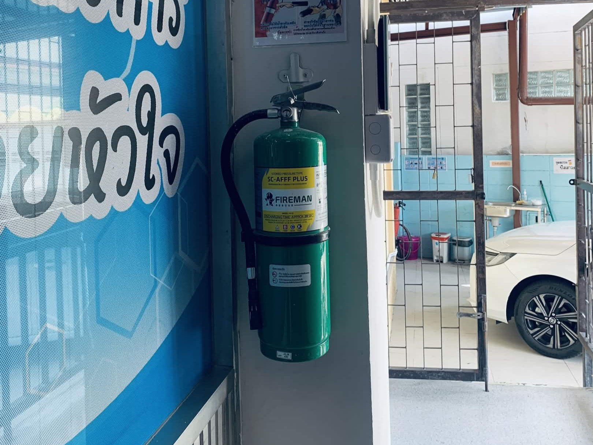
จุดติดตั้งที่ 1
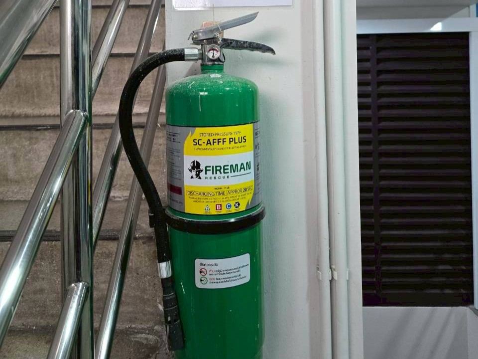
จุดติดตั้งที่ 2
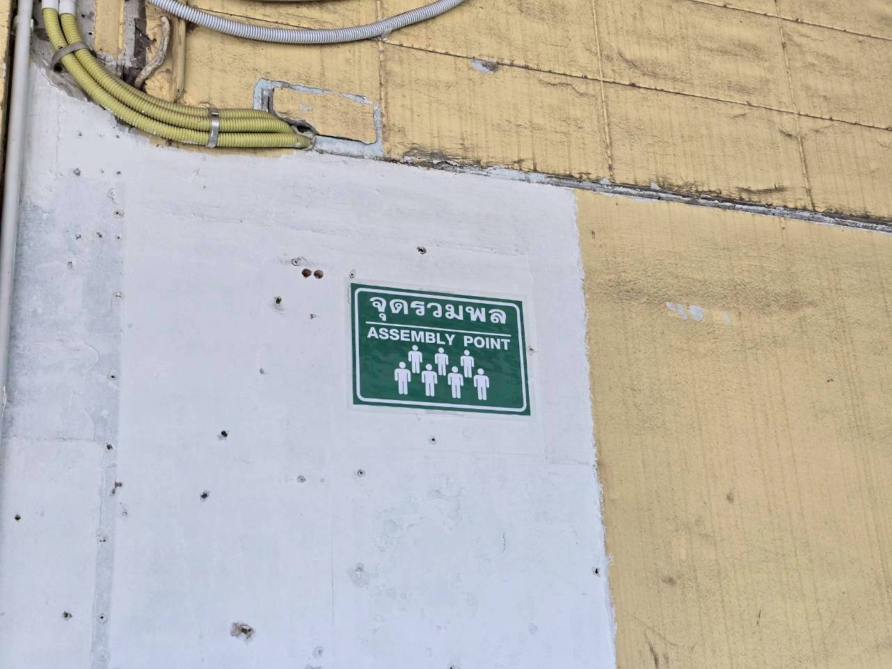
ป้ายบอกจุดรวมพลชัดเจนบริเวณภายนอกอาคาร
ผลการประเมินตนเองเพื่อการรับรองคุณภาพ
ตอนที่ 1: การบริหารจัดการทั่วไป (General Management)
สรุปผลการประเมิน ตอนที่ 1
การบริหารจัดการภายในศูนย์คัดกรอง
คะแนนประเมินตนเองเฉลี่ย
คะแนนประเมินแยกตามองค์ประกอบ
จุดเด่นและสิ่งที่พบในการดำเนินงาน
- ผู้บริหารมีวิสัยทัศน์: มีการประชุมคณะกรรมการใน รพ.สต. เพื่อกำหนดนโยบายการจัดตั้งศูนย์คัดกรองอย่างเป็นรูปธรรม
- การทำงานเป็นทีม: เจ้าหน้าที่ รพ.สต. ให้ความร่วมมือเป็นอย่างดี โดยมีการจัดทำแผนร่วมกัน และแบ่งหน้าที่ความรับผิดชอบอย่างชัดเจนเป็นลายลักษณ์อักษร
- พลังเครือข่าย: ชุมชนให้ความร่วมมือในการดำเนินงานดูแลผู้ป่วยในพื้นที่เป็นอย่างดี
- การพัฒนาบุคลากร: มีการส่งเสริมและพัฒนาศักยภาพผู้ปฏิบัติงานโดยส่งเข้ารับการอบรมอย่างต่อเนื่อง
ผลการประเมินตนเองเพื่อการรับรองคุณภาพ
ตอนที่ 2: ระบบงานสำคัญ (Key Work Systems)
สรุปผลการประเมิน ตอนที่ 2
ระบบความปลอดภัย สาธารณูปโภค และระบบข้อมูล
คะแนนประเมินตนเองเฉลี่ย
คะแนนประเมินแยกตามองค์ประกอบ
จุดเด่นและสิ่งที่พบในการดำเนินงาน
- แผนการดำเนินงานชัดเจน: มีขั้นตอนการทำงาน (Flow Chart) ที่เป็นระบบและเข้าใจง่าย
- การคุ้มครองข้อมูลส่วนบุคคล: มีการจัดเก็บและคุ้มครองข้อมูลส่วนบุคคลตาม พ.ร.บ. คุ้มครองข้อมูลส่วนบุคคล พ.ศ.2562 (PDPA) อย่างเคร่งครัด
- การพัฒนาคุณภาพ (CQI): เมื่อพบข้อสงสัยหรือข้อผิดพลาดในการดำเนินงาน ได้นำปัญหามาทบทวนเพื่อหาแนวทางการแก้ไขอย่างเป็นระบบ
- มาตรฐานสถานที่และอุปกรณ์: มีการจัดสถานที่ให้เอื้ออำนวยต่อการทำงาน มีความปลอดภัย และมีอุปกรณ์พร้อมใช้งานได้มาตรฐาน
ผลการประเมินตนเองเพื่อการรับรองคุณภาพ
ตอนที่ 3: กระบวนการดูแลผู้ป่วย (Patient Care Process)
สรุปผลการประเมิน ตอนที่ 3
กระบวนการคัดกรอง ประเมิน และการดูแลต่อเนื่อง
คะแนนประเมินตนเองเฉลี่ย
คะแนนประเมินแยกตามองค์ประกอบ
จุดเด่นและสิ่งที่พบในการดำเนินงาน
- มาตรฐานวิชาชีพ: มีเอกสารการทำงานตามมาตรฐาน และมีแบบประเมินครบถ้วน (OAS, V2, 2Q, 9Q, 8Q)
- ความเชี่ยวชาญ: ผู้ปฏิบัติงานมีความรู้ ความเข้าใจในการใช้แบบสอบถาม มีทักษะในการดูแลและให้คำแนะนำผู้รับบริการได้ตามข้อกำหนด
- ระบบส่งต่อ: สามารถประเมินและส่งต่อผู้ป่วยได้อย่างรวดเร็ว ในกรณีที่อาการเกินขีดความสามารถของ รพ.สต.
- การติดตามในชุมชน: มีการประสานงานกับภาคีเครือข่าย และมีแผนการดูแลในชุมชนโดยผู้นำชุมชน เพื่อสอดส่องดูแลอย่างต่อเนื่อง
ผลการประเมินตนเองเพื่อการรับรองคุณภาพ
ตอนที่ 4: ผลลัพธ์การดำเนินงาน (Outcomes & Value Delivered)
สรุปผลลัพธ์การขับเคลื่อนศูนย์คัดกรอง
"ศูนย์คัดกรอง รพ.สต.แสนสุข สามารถดำเนินการคัดกรอง ค้นหา เฝ้าระวัง ให้คำปรึกษา ตรวจปัสสาวะหาสารเสพติด ส่งต่อ และติดตามดูแลร่วมกับชุมชนได้อย่างมีประสิทธิภาพ เป็นที่พึ่งให้ประชาชนในพื้นที่ในการให้คำแนะนำ ปรึกษาปัญหายาเสพติดให้กับผู้รับบริการและครอบครัว ส่งผลให้สามารถลดความรุนแรงจากการใช้ยาเสพติดในพื้นที่ได้อย่างเป็นรูปธรรม"
ค้นหาและคัดกรอง
มีระบบการเฝ้าระวัง ตรวจปัสสาวะ และคัดกรองผู้ป่วยเชิงรุกอย่างมีประสิทธิภาพ
ที่พึ่งของชุมชน
เป็นศูนย์กลางในการให้คำปรึกษาแก่ผู้ป่วยและครอบครัวอย่างเข้าใจและปลอดภัย
ลดความรุนแรง
ติดตามดูแลร่วมกับเครือข่ายชุมชน ช่วยลดปัญหาความรุนแรงจากการใช้ยาเสพติดในพื้นที่
แผนยุทธศาสตร์ศูนย์คัดกรองในอนาคต (ระยะ 1-3 ปี)
กลยุทธ์: พัฒนาศักยภาพบุคลากร
ค้นหาและส่งบุคลากรเข้าอบรมหลักสูตร BA, BI, MI หรือ E-learning สบยช. เพื่อเพิ่มขีดความสามารถในการคัดกรองและบำบัด พร้อมถ่ายทอดความรู้สู่ทีม
กลยุทธ์: ขับเคลื่อนการบำบัด & ส่งต่อ
ประชาสัมพันธ์บริการ คัดกรองผู้ป่วยทุกรูปแบบ (สมัครใจ/ม.114) ส่งต่อ รพ.ชลบุรี และประสานภาคีเครือข่ายเพื่อนำผู้ป่วยคืนสู่ชุมชนได้อย่างสำเร็จ
ขอขอบคุณที่รับชม
ศูนย์คัดกรอง โรงพยาบาลส่งเสริมสุขภาพตำบลแสนสุข